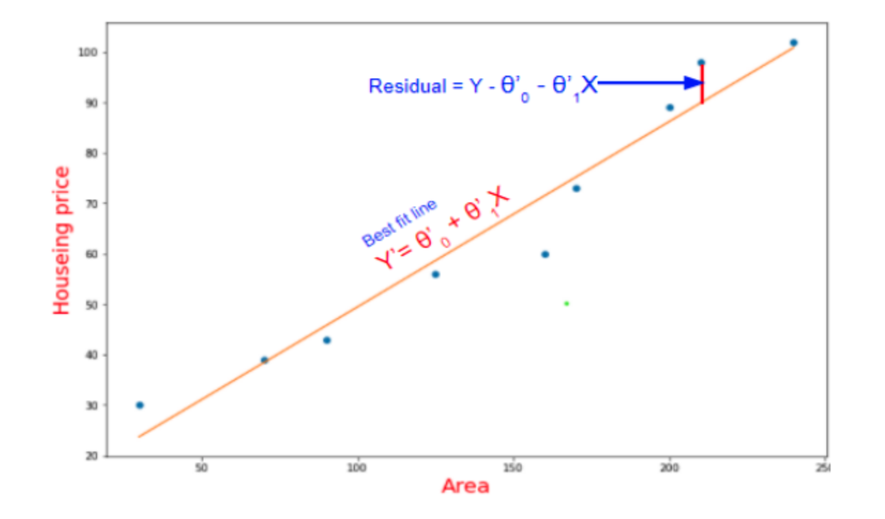
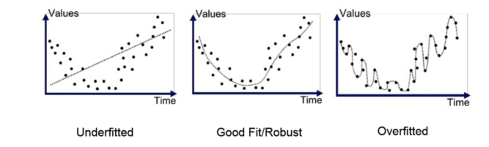
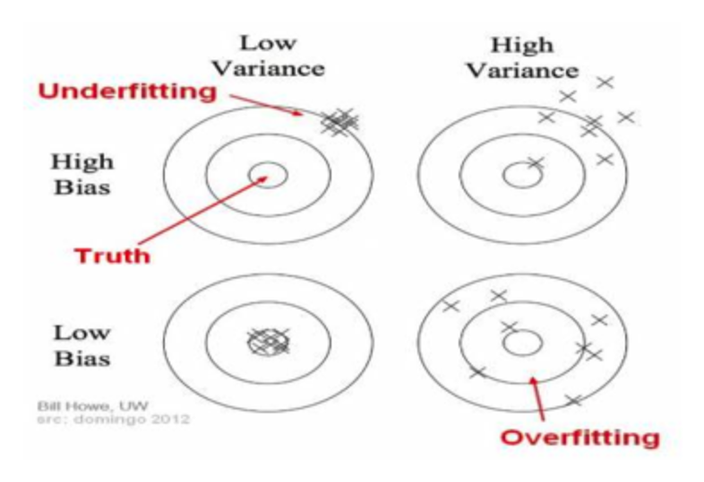
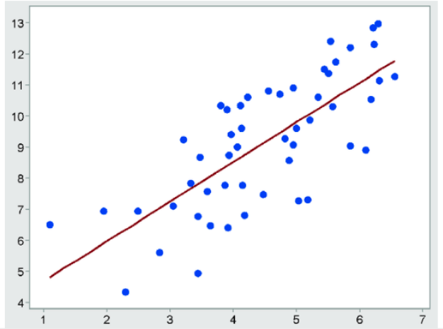

Pre-Read
📌 Quick Navigation
- Continuous vs. Categorical Variables
- Dependent vs. Independent Variables
- Variance & Standard Deviation
- Confidence Intervals
- Supervised Learning & Linear Regression
- Maximum Likelihood & Empirical Risk Minimization
- Best-Fit Regression Line (OLS)
- Bias-Variance Trade-off
- Linear vs. Non-Linear & Parametric vs. Non-Parametric Models
- Regularization: Ridge (L2) & Lasso (L1)
- Correlation vs. Causation
- Cross-Validation
- Bootstrapping
- Decision Trees
- Bagging
- Random Forest
- Model Comparison Table
- References & Further Reading
Continuous vs. Categorical Variables
What & Why - Continuous variables take infinitely many numeric values over an interval (e.g., height, income). They enable regression, density estimation, and correlation analysis. - Categorical variables take a finite set of discrete labels (e.g., digit 0–9, species). They drive classification, stratified sampling, and one-hot/target encoding in ML.
Practical Considerations
- Preprocessing:
- Continuous → scaling (standardization/normalization), outlier handling.
- Categorical → encoding (one-hot, ordinal, target/frequency encoders).
- Model fit: Linear models assume linear relationships on (possibly transformed) continuous features; tree models natively handle both.
Pitfalls - Treating truly ordinal categories (e.g., education level) as nominal can discard order information. - Using inappropriate encodings can leak target information (target encoding without proper CV).
Dependent vs. Independent Variables
Definitions - Dependent (target) variable \(Y\): the quantity we predict or explain. - Independent (feature) variables \(\mathbf{X}\): observed predictors influencing \(Y\).
Example - Predict Salary (dependent) from Age, Education, Work Experience (independent).
Notes for ML - Feature selection & causality: correlation with \(Y\) does not imply causal influence. - Leakage: ensure features are available at prediction time and do not encode future information.
Variance & Standard Deviation
Intuition
Measures of spread around the mean \(\mu\).
Why Both?
- Variance is useful analytically (appears in loss functions and likelihood estimation).
- Standard Deviation is interpretable in original units; better for communication.
Practice
Use sample variance formulas with Bessel’s correction for unbiased estimation:
Confidence Intervals
Idea
A confidence interval (CI) gives a range likely to cover a population parameter with level \(1-\alpha\) (e.g., 95%).
Example
“Mean age is in \([18,24]\) with 95% confidence”: across many samples, 95% such CIs would contain the true mean.
Trade-off - Higher confidence ⇒ wider interval. - Narrow intervals require larger sample sizes or lower confidence.
Notes - CI ≠ probability the specific interval contains the parameter (frequentist nuance). - For means with unknown variance and small \(n\), use t-intervals.
Supervised Learning & Linear Regression
Supervised Learning - Train on labeled data \((\mathbf{X}, Y)\) to learn a mapping \(f:\mathbf{X}\to Y\). - Regression for continuous \(Y\); classification for categorical \(Y\).
Linear Regression
- Fit parameters \(\theta\) by minimizing Mean Squared Error (MSE):
Evaluation Metrics
-
\(R^2\): fraction of variance explained (can be misleading with many features).
-
Adjusted \(R^2\): penalizes unnecessary features.
-
RMSE: \(\sqrt{\text{MSE}}\), interpretable in target units.
Try it (Colab)
👉 Open in Colab

Diagram

Maximum Likelihood & Empirical Risk Minimization
Maximum Likelihood (ML)
- Assume \(Y_i = \theta_0+\theta_1 X_i + W_i\), with \(W_i \sim \mathcal{N}(0,\sigma^2)\).
- Likelihood (independent observations):
- Maximizing log-likelihood \(\Leftrightarrow\) minimizing sum of squared errors.
Empirical Risk Minimization (ERM) - Choose parameters minimizing average loss on observed data:
- With squared loss ⇒ OLS; with other losses ⇒ robust or classification variants.
Takeaway
MLE under Gaussian noise and ERM with squared loss yield the same OLS solution.
Bias-Variance Trade-off
Key Terminologies
- Training Data: Larger fraction of the dataset used to fit the model parameters.
- Validation Data: Smaller fraction used to iteratively validate and tune the model.
- Testing/Unseen Data: Held-out data, not seen during training/validation, used to evaluate generalization.
- Model Complexity: A model with more parameters is considered more complex, as it can represent more patterns but risks overfitting.
Overfitting vs. Underfitting
- Overfitting: The model learns noise and idiosyncrasies in training data.
- Training error is very low, but test error is high.
-
Model does not generalize to unseen data.
-
Underfitting: The model is too simple to capture underlying patterns.
- Both training and test errors are high.
- Performance is poor everywhere.
Illustration

Bias
Bias measures how much a model’s predictions deviate from the true target values in the training set.
- High bias → overly strong assumptions, model too simple. Leads to underfitting.
- Low bias → fewer assumptions, model more flexible.
Formally, Bias is the error due to simplifying assumptions in the model:
Variance
Variance measures how much the model’s predictions would change if trained on different training sets.
- High variance → model overly sensitive to data fluctuations. Leads to overfitting.
- Low variance → stable predictions across datasets.
Formally, Variance is defined as:
The Trade-off
- Increasing bias → model becomes simpler, variance decreases, validation error may improve.
- Decreasing bias → model becomes more complex, variance increases, risk of overfitting.
- Goal: Find the “sweet spot” where total error (bias² + variance + irreducible error) is minimized.
Illustration

Best-Fit Regression Line (OLS)
Goal
Find the line minimizing sum of squared vertical distances between points and line.
Geometric View
Projection of \(Y\) onto the column space of \(\mathbf{X}\); solution:
Practice Tips - Center/scale features to improve conditioning. - Inspect residual plots for heteroscedasticity & non-linearity.
Diagram

Linear vs. Nonlinear & Parametric vs. Nonparametric Models
Linear vs. Nonlinear - Linear in parameters:
- Nonlinear example:
- Note: Feature engineering (polynomials, splines) can keep model linear in parameters while modeling nonlinear relationships.
Parametric vs. Nonparametric - Parametric (finite parameters; distributional/functional assumptions). Fast, interpretable, may underfit complex data. - Nonparametric (flexible; complexity grows with data). Powerful but can overfit; requires regularization/validation.
Regularization: Ridge (L2) & Lasso (L1)
Motivation
Combat overfitting by penalizing large coefficients; improve generalization and stability.
Ridge (L2)
- Shrinks coefficients toward 0 (never exactly 0), helpful for multicollinearity.
Lasso (L1)
- Encourages sparsity (exact 0s) ⇒ feature selection.
Elastic Net (optional blend)
\(\alpha(\lambda \lVert\beta\rVert_1 + (1-\lambda)\lVert\beta\rVert_2^2)\) combines both.
Diagrams
- Ridge loss: 
- Lasso loss: 
Try it (Colab)
👉 Open in Colab

Correlation vs. Causation
Correlation
- Positive: both increase together.
- Negative: one increases, the other decreases.
- Zero: no linear association.
Causation - Changes in one variable directly cause changes in another.
Why it matters - Spurious correlations arise from confounders (e.g., summer increases both ice-cream and AC sales).
Visuals
- Positive: 
- Negative: 
- Causation example: 
Cross-Validation
Goal
Estimate out-of-sample performance and tune hyperparameters reliably.
K-Fold Procedure
1. Split data into \(K\) folds.
2. For each \(k\): train on \(K-1\) folds, validate on the held-out fold.
3. Average metrics across folds.
Tips - Use stratified folds for classification to preserve label proportions. - Perform all preprocessing inside CV folds to avoid leakage.
Diagram

Bootstrapping
What
Resample with replacement to create many “bootstrap samples.”
Why - Estimate uncertainty (SEs, CIs) and model stability when analytic formulas are hard.
How - For dataset of size \(n\), draw \(n\) samples with replacement, compute statistic. Repeat \(B\) times.
Visuals
- 
- 
- 
Decision Trees
Concept - Recursive partitioning of feature space with axis-aligned splits to minimize impurity or squared error.
Regression Trees - Choose split maximizing reduction in RSS; predict mean in each leaf.
Classification Trees - Criteria: Gini, Entropy; predict majority class in leaf.
Pros/Cons
- ✅ Interpretable rules, handles mixed data, little preprocessing.
- ❌ Can overfit; unstable (high variance).
Diagram

Bagging
Ensemble = Bootstrap + Aggregation - Train many base learners on bootstrap samples; average (regression) or vote (classification).
Why it works - Reduces variance via averaging independent-ish models.
When to use - High-variance, low-bias models (e.g., trees) benefit most.
Diagram

Random Forest
Idea - Bagging of decision trees + random subset of features at each split.
Benefits - Further decorrelates trees → larger variance reduction; strong default baseline.
Prediction
- Regression: average predictions.
- Classification: majority vote.
Visuals
- Regression averaging: 
- Classification voting: 
Practice
- Tune n_estimators, max_depth, max_features.
- Use OOB (out-of-bag) error for quick, honest validation.
Model Comparison Table
| Model / Method | Type | Objective / Loss | Strengths | Limitations | Typical Use Cases |
|---|---|---|---|---|---|
| Linear Regression | Parametric, linear | MSE (OLS) | Interpretable, fast, baseline | Linear assumptions, sensitive to outliers | Numeric prediction with linear trends |
| Ridge (L2) | Parametric | MSE + \(\alpha \|\beta\|_2^2\) | Stabilizes coef., handles collinearity | No feature selection | Many correlated features |
| Lasso (L1) | Parametric | MSE + \(\alpha \|\beta\|_1\) | Sparsity & feature selection | Can be unstable with correlated features | High-dimensional sparse problems |
| Decision Tree | Nonparametric | RSS / Gini / Entropy | Interpretable rules, nonlinearity | High variance, overfitting | Quick rule extraction, mixed data |
| Bagging | Ensemble | Base-learner loss | Variance reduction | Less interpretable | Stabilize high-variance learners |
| Random Forest | Ensemble | Base-learner loss | Strong baseline, robust, OOB estimate | Larger models, less interpretability | Tabular data, default go-to |
References & Further Reading
- Hugging Face — Transformers Documentation
- Google — Machine Learning Crash Course
- NVIDIA — Developer: Deep Learning
- OpenAI — Research
- Microsoft — ML.NET & Research AI
- Meta AI — Research Publications
- DeepMind — Publications
- StatQuest (YouTube) — Regression & Regularization Series